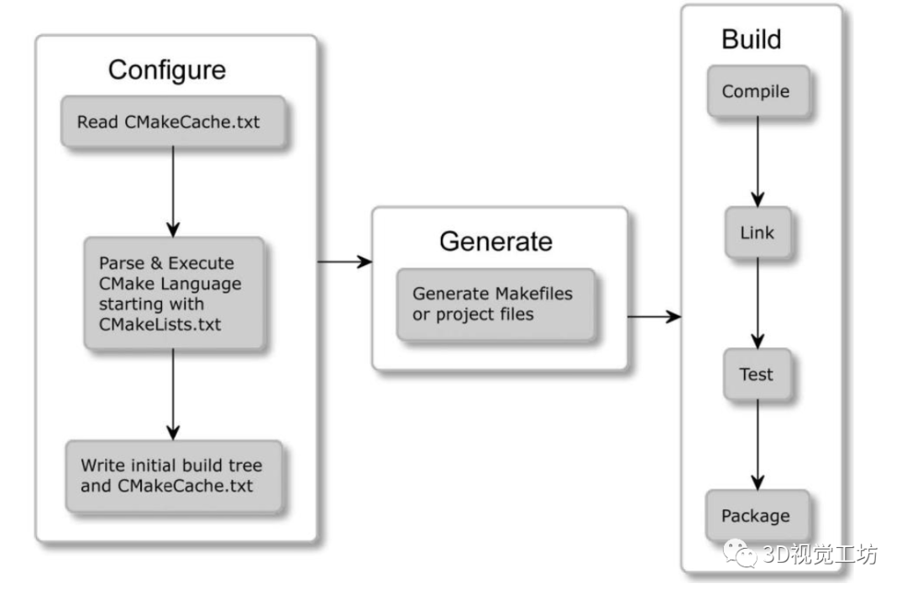

1. 基础知识¶
CMake Tutorial — CMake 3.28.20231128-g2d0b779 Documentation
官方文档 api
CMake Reference Documentation — CMake 3.28.0-rc5 Documentation
中文文档
Introduction - 《CMake菜谱（CMake Cookbook中文版）》 - 书栈网 · BookStack
Modern CMake
An Introduction to Modern CMake · Modern CMake
Modern CMake for C++
GitHub - xiaoweiChen/Modern-CMake-for-Cpp: 《Modern CMake for C++》的非专业个人翻译
CMake本身是一个工具集，由五个可执行的程序组成：cmake、ctest、cpack、cmake-gui和ccmake，其中cmake可以说是出镜率最高的明星级别程序了，它用于在构建项目的第一步，进行项目的配置、生成和构建项目的主要可执行文件的工作。其他的程序们ctest用于运行和报告测试结果的测试驱动程序，cpack用来生成安装程序和源包的打包程序，cmake-gui是 cmake 的图形界面，ccmake（注意ccmake比cmake多了一个c）也是用于图形界面，与cmake-gui不同的地方在于ccmake是基于控制台（terminal）的图形界面。
基础流程¶
CMake 的整体流程可以分为配置（Configure）、生成（Generate）、构建（Build）和安装（Install）四个主要阶段。这四个阶段通常是按顺序依次执行的。如图表示。

下面是每个阶段的主要任务：
- 配置（configuration）– 配置项目，将目标的构建信息全部计算出来，
${CXX_COMPILER_ID}的值在此计算 - 生成（generation）- 生成对应构建系统/生成器的构建文件, 生成表达式所在的阶段，
$<CXX_COMPILER_ID>的值在此计算 - 构建（build） – 调用构建系统构建项目, 可以手动使用目标构建系统（VS, makefile）构建，也可以使用cmake调用目标构建系统（生成器）构建。
- 安装（install）- 选择将构建生成的可执行文件、库、头文件等安装到指定的目录中。
下面我们将详细解析每个步骤。
1、配置（Configuration）
配置阶段是CMake解析CMakeLists.txt文件的过程。在这个阶段，CMake会读取CMakeLists.txt文件，并执行其中的命令。这些命令主要用于检查系统环境（例如编译器、库等），设置构建选项，以及定义构建目标（例如库、可执行文件等）。
CMakeLists.txt文件是CMake的核心，它定义了项目的构建规则和依赖关系。每个目录（包括子目录）中都可以有一个CMakeLists.txt文件。在配置阶段，CMake会从顶层目录的CMakeLists.txt文件开始，递归地处理每个子目录中的CMakeLists.txt文件。
- 在配置阶段，CMake解析项目的CMakeLists.txt文件，设置变量，选择生成器，并生成一个CMake缓存文件（通常是
CMakeCache.txt）。 - 在这个阶段，CMake会记录用户设置的变量和CMakeLists.txt文件中的信息，以及其他配置选项。生成表达式在这个阶段通常不会得到具体的值，因为它们通常是在构建阶段动态计算的
2、生成（Generation）
生成阶段是CMake根据配置阶段的结果，生成实际的构建文件的过程。这些构建文件通常是Makefile文件，但也可以是其他类型的构建文件，例如Ninja构建文件，或者Visual Studio项目文件，这取决于你选择的构建工具。
在生成阶段，CMake会将CMakeLists.txt文件中定义的构建规则和依赖关系，转换为构建工具可以理解的形式。例如，如果你选择的构建工具是Make，CMake会生成Makefile文件。每个目录（包括子目录）中都会生成一个Makefile文件。
- 在生成阶段，CMake使用配置阶段生成的CMake缓存文件，根据用户的选择生成实际的构建系统文件（例如Makefile、Visual Studio项目文件等）。
- 生成表达式在这个阶段会被动态计算，生成具体的值。这些值依赖于构建配置、平台和其他上下文信息。
3、构建（Build）
构建阶段是使用构建工具（例如Make、Ninja或Visual Studio）根据生成的构建文件，编译源代码并链接生成目标文件的过程。
在构建阶段，构建工具会读取生成的构建文件，按照其中定义的规则和依赖关系，执行实际的编译和链接操作。构建工具会自动处理依赖关系，确保在编译和链接一个目标文件之前，其所有依赖的目标文件都已经被正确地编译和链接。
这个阶段即可以手动使用目标构建系统（VS, makefile）构建，也可以使用cmake调用目标构建系统（生成器）构建。
以上就是CMake构建过程的基本流程。在理解了这个流程之后，我们就可以更深入地探讨CMake如何生成Makefile，以及CMake构建过程中的关键步骤了。
我们来看一个具体的例子：
cmake -DBUILD_TESTBED=ON -DBUILD_SHARED_LIBS=ON -S ./ -B build -G "Visual Studio 16 2019"
cmake --build build --config Release
第一行命令涵盖了CMake的配置阶段和生成阶段。详细解释一下：
-
配置阶段：
-DBUILD_TESTBED=ON -DBUILD_SHARED_LIBS=ON: 这部分是配置阶段，通过设置CMake变量来配置项目。具体来说，它设置了BUILD_TESTBED、BUILD_SHARED_LIBS等变量的值。-S ./: 指定了源代码目录，告诉CMake去哪里找CMakeLists.txt文件。-B build: 指定了生成文件的目录，告诉CMake将生成的文件放在哪里。
-
生成阶段：
-G "Visual Studio 16 2019": 这部分是生成阶段，它选择了生成器为"Visual Studio 16 2019"。这告诉CMake生成Visual Studio所需的项目文件。
-
综合起来： 所以，整个命令包含了配置阶段的变量设置和生成阶段的生成器选择。执行这个命令后，CMake将会在指定的生成目录（这里是
build）生成与Visual Studio 2019相关的项目文件（例如.sln文件和.vcxproj文件），并配置这些项目以符合你在命令中设置的变量。
第二行命令是执行构建阶段的CMake命令，也可以不用这行命令生成，直接打开Visual Studio来生成。
- --build build: 这部分告诉CMake要执行构建。--build选项后面需要指定构建目录，这里是build，表示构建系统文件已经生成在build目录中。
- 在Windows系统中会自动调用VS的编译器去进行编译
- 在Linux系统中会自动调用make命令进行编译
- --config Release: 这是可选的，用于指定构建的配置。在这个例子中，配置被设置为Release，这是一个特定于Visual Studio的配置。如果不指定，CMake将使用默认配置。
综合起来，这个命令告诉CMake在指定的构建目录（build）中执行构建操作，使用的是之前生成的构建系统文件，而构建的配置类型为Release。这将会编译和链接项目，并生成Release版本的可执行文件或库。
CMake构建完成后，会在项目的根目录下生成一个名为build的目录。这个目录是CMake构建过程中所有中间文件和最终生成的目标文件的存放地。下面我们将详细解析这个目录的结构。
首先，我们来看一下build目录的一级子目录：
- CMakeFiles：这个目录中存放的是CMake在构建过程中生成的临时文件，包括编译器检查的结果、Find模块（Find Modules）查找的结果等。这些文件主要用于CMake自身的需求，一般情况下，我们不需要关注这个目录的内容。
- Testing：如果你的项目中包含了CTest测试，那么这个目录将会被生成。它包含了所有CTest测试的结果。
- bin：这个目录中包含了所有的可执行文件（Executable Files）。如果你的CMake项目中包含了多个可执行文件，那么它们都会被放在这个目录中。
- lib：这个目录中包含了所有的库文件（Library Files）。无论是静态库（Static Libraries）还是动态库（Dynamic Libraries），都会被放在这个目录中。
接下来，我们再深入到CMakeFiles目录中，看一下它的二级子目录：
- project.dir：这个目录中包含了项目构建过程中的临时文件，如.o文件和.d文件。这些文件是编译器在编译源代码时生成的。
- CMakeOutput.log：这个文件记录了CMake在配置过程中的输出信息，包括编译器检查的结果、Find模块查找的结果等。
- CMakeError.log：这个文件记录了CMake在配置过程中遇到的错误信息。
以上就是CMake构建后的目录结构的基本情况。在实际的项目中，可能会根据项目的具体需求，生成更多的子目录和文件。但是，这些基本的目录和文件是你在任何一个使用CMake构建的项目中都能看到的。
cmake从入门到完全放弃 - 知乎
CMake构建Makefile深度解析：从底层原理到复杂项目 - 知乎
基础语法¶
CMake的基础概念是目标。构建系统的核心也在于此：管理目标的构建、不同目标的依赖问题。在CMake中的目标/目录等等还附带有属性（property）
变量类型有字符串，布尔值或列表（由分号分隔的元素组成的序列）
-
注释使用
#多行注释#[](<#>) -
变量使用
${var}方式取值，但是在if控制语句中是直接使用变量名var -
命令command是大小写无关的，参数和变量是大小写相关的。
指令名不区分大小写，但在 CMake 社区中有一个约定，即在指令名中使用 snake_case(即小写 单词与下划线连接) -
SET(SRC_LIST main.c) 可以写成 SET(SRC_LIST “main.c”)，如果源文件名中含有空格，就必须要加双引号
-
ADD_EXECUTABLE(hello main) 后缀可以不加，他会自动去找.c和.cpp，最好不要这样写
-
计算
math(EXPR <variable> "<expression>") - 控制流 if
if控制语句中直接使用变量名更可靠，即if(b_var)比if(${b_var})好。
if(<condition>) <commands> elseif(<condition>) # optional block, can be repeated <commands> else() # optional block <commands> endif() # 是否定义变量 if(DEFINED <name>) if(DEFINED CACHE{<name>}) if(DEFINED ENV{<name>}) # 以下操作符支持比较操作: EQUAL，LESS，LESS_EQUAL，GREATER 和 GREATER_EQUAL # 字符串相等 if ("A" STREQUAL "${B}") # MATCHES 操作符，匹配的组都在CMAKE_MATCH_<n>变量中。 <variable|string> MATCHES <regex> # 还有其他检查，若满足条件则返回 true。 • 若值在列表中: <variable|string> in _LIST<variable> • 若指令可用: command<command-name> • 若 CMake 策略存在: POLICY<policy-id> • 若使用 add_test() 添加 CTest 测试:test<test-name> • 若定义了构建目标:target<target-name> # 文件系统的check # 检查文件或目录是否存在 这将解析符号链接 (若符号链接的目标存在，则返回 true)。 EXISTS <path-to-file-or-directory> # 检查哪个文件更新 如果 file1 比 (或等于)file2 更新， # 或者两个文件中有一个不存在，则返回 true。 <file1> IS_NEWER_THAN <file2> # 检查路径是否为目录 IS_DIRECTORY path-to-directory # 检查路径是否为符号链接 IS_SYMLINK file-name # 检查路径是否为绝对路径 IS_ABSOLUTE path
foreach(<loop_var> <items>)
<commands>
endforeach()
while(<condition>)
<commands>
endwhile()
- 变量
set(<variable> <value>... [PARENT_SCOPE])
其中function()新增了一个作用域（SCOPE），set(... PARENT_SCOPE)设置父作用域。一般用作函数中返回值的作用。这种解决方法有一定的局限性，因为其不允许访问超过一个级别的变量。另一件值得注意的事 情是，使用 PARENT_SCOPE 不会改变当前作用域中的变量。
作用域的参数 DIRECTORY 或 GLOBAL 参数。顾名思义，DIRECTORY 关键字将在当前目录及其以下应用保护，而 GLOBAL 关 键字将对整个构建应用保护。
函数function和宏定义macro¶
macro定义：
macro(<name> [arg1 [arg2 [arg3 ...]]])
COMMAND1(ARGS ...)
COMMAND2(ARGS ...)
...
endmacro(<name>)
function定义：
function(<name> [arg1 [arg2 [arg3 ...]]])
COMMAND1(ARGS ...)
COMMAND2(ARGS ...)
...
endfunction(<name>)
函数和宏的默认内部变量
| 变量 | 说明 |
|---|---|
| ARGV# | ARGV0为第一个参数，ARGV1为第二个参数，依次类推 |
| ARGV | 定义宏（函数）时参数为2个，实际传了4个，则ARGV代表实际传入的两个 |
| ARGN | 定义宏（函数）时参数为2个，实际传了4个，则ARGN代表剩下的两个 |
| ARGC | 实际传入的参数的个数 |
注意，参数可以多传，但不能少传。
- CMAKE_CURRENT_FUNCTION：当前函数名称
- CMAKE_CURRENT_FUNCTION_LIST_DIR： 当前函数路径
- CMAKE_CURRENT_FUNCTION_LIST_FILE：当前函数所属文件
- CMAKE_CURRENT_FUNCTION_LIST_LINE：当前函数定义的起始行数
# function 函数测试
# 函数名: xyz
function(xyz arg1 arg2)
message("ARGC: ${ARGC}")
message("ARGV: ${ARGV}")
message("ARGN: ${ARGN}")
message("ARGV0: ${ARGV0}")
message("ARGV1: ${ARGV1}")
# 循环打印出各个参数
set(i 0)
foreach(loop ${ARGV})
message("arg${i}: " ${loop})
math(EXPR i "${i} + 1")
endforeach()
endfunction()
# 调用函数
xyz(A B C D E F G)
# 实际输出
ARGC: 7
ARGV:A;B;C;D;E;F;G
ARGN:C;D;E;F;G
ARGVO:A
ARGV1:B
argo:A
arg1:B
arg2:C
arg3:D
arg4:E
arg5:F
arg6:G
CMake 函数的返回值通常是通过设置变量的值来实现的，然后在函数外部访问这个变量。
# 定义一个简单的函数
function(my_function result_var)
set(${result_var} "Hello, World!" PARENT_SCOPE)
endfunction()
# 调用函数并获取返回值
my_function(my_result)
# 输出返回值
message("Returned value: ${my_result}")
在这个例子中，我们定义了一个名为 my_function 的函数，该函数接受一个参数 result_var 作为返回值的变量。在函数内部，我们使用 set(${result_var} "Hello, World!" PARENT_SCOPE) 设置变量的值，并通过 PARENT_SCOPE 标志将其作用域扩展到调用该函数的父级作用域。然后，在函数外部，我们调用了函数，并通过 ${my_result} 获取了返回值，并使用 message 命令输出了这个返回值。
请注意，CMake 函数的返回值通常是通过在调用函数时设置变量的值，而不是通过显式的 return 语句。这是因为 CMake 函数在设计上更侧重于设置变量来影响调用方的行为，而不是通过返回值来传递结果。
生成表达式 Generator expressions¶
CMake首先解析项目中的CMakeLists.txt文件-称为"配置阶段"，然后生成生成环境-称为"生成阶段"。
因此，基本上，生成器表达式适用于仅生成器可以知道的所有内容
官方文档:
cmake-generator-expressions(7) — CMake 3.28.0-rc5 Documentation
Generator expressions are evaluated during build system generation to produce information specific to each build configuration. They have the form $<...>
# case 1
set(LIB_SUFFIX $<IF:${BUILD_SHARED_LIBS}, $<IF: ${WIN32}, .dll, .so>, $<IF:${WIN32}, .lib, .a> >)
set(LIB_TYPE $<IF:${BUILD_SHARED_LIBS}, SHARED, STATIC>)
add_library(${PROJECT_NAME} ${LIB_TYPE} IMPORTED GLOBAL)
# case 2
$<TARGET_FILE:${target}>
# case 3, debug库加后缀
arcsoft_hand_gesture_recognition$<$<CONFIG:Debug>:_d>
$<IF:${BUILD_SHARED_LIBS}, SHARED, STATIC>
$<${_MT_}: -mt>
生成器表达式将在生成阶段计算 (当配置完成并创建构建系统时)，所以不能将其输出捕获到 变量中，并打印到控制台。
要调试可以使用以下方法:
- 将其写入一个文件 (file() 指令的这个特定版本支持生成器表达式):
file(GENERATE OUTPUT filename CONTENT "$<...>")
- 添加一个自定义目标，并根据命令行显式构建:
custom_target(gendbg COMMAND ${CMAKE_COMMAND} -E echo "$<...>")
注意：已导入目标（Imported Target）的属性 IMPORTED_LOCATION的值不能使用生成表达式。它需要在配置阶段就能够被确定，以确保正确的链接。
在CMake中，有一些属性是不能使用生成表达式的，因为它们需要在配置阶段（configure time）就能够确定，而生成表达式是在生成阶段（generate time）使用的。以下是一些不能使用生成表达式的属性的示例：
INTERFACE_INCLUDE_DIRECTORIES: 用于指定接口目标的包含目录。这个属性在配置阶段就需要确定，而不能使用生成表达式。IMPORTED_LOCATION: 已导入目标的位置，如前面提到的。需要在配置阶段确定。INTERFACE_LINK_LIBRARIES: 用于指定接口目标的链接库。在配置阶段需要明确指定，而不能使用生成表达式。INTERFACE_COMPILE_DEFINITIONS: 接口目标的编译定义。在配置阶段需要明确指定。VERSIONandSOVERSION: 用于设置共享库的版本信息。在配置阶段需要明确指定。
# 1. INTERFACE_INCLUDE_DIRECTORIES
target_include_directories(target_name INTERFACE
$<BUILD_INTERFACE:${CMAKE_CURRENT_SOURCE_DIR}/include>
$<INSTALL_INTERFACE:include>
)
# 2. IMPORTED_LOCATION
set_target_properties(external_library PROPERTIES
IMPORTED_LOCATION /path/to/external/library/libexternal_library.so
)
# 3. INTERFACE_LINK_LIBRARIES
target_link_libraries(target_name INTERFACE
library1
library2
)
# 4. INTERFACE_COMPILE_DEFINITIONS
target_compile_definitions(target_name INTERFACE
INTERFACE_DEFINE1
INTERFACE_DEFINE2
)
# 5. VERSION and SOVERSION
set_target_properties(my_library PROPERTIES
VERSION 1.2.3
SOVERSION 1
)
- Conditional Expressions
编译基础¶
.a .so .lib .dll的区分¶
.a .so .lib .dll这几个文件扩展名代表不同类型的库文件，它们在不同的操作系统和编程环境中使用。以下是它们的一些常见用途和区别：
- .a (Archive):
- 用途： 在Unix/Linux系统上，
.a文件是静态库的一种形式，其中包含了一组目标文件的归档（archive）。 - 工作原理： 当你链接一个程序时，静态库的内容会被复制到可执行文件中，使得可执行文件独立于库文件。
- 扩展名含义： Archive 意味着它是一个包含其他文件的档案文件。
- 用途： 在Unix/Linux系统上，
- .so (Shared Object):
- 用途： 在Unix/Linux系统上，
.so文件是共享库的一种形式，也称为动态链接库。 - 工作原理： 共享库在运行时动态加载到内存中，多个程序可以共享同一个库的实例，这有助于减少内存占用。
- 扩展名含义： Shared Object 表示这是一个共享对象。
- 用途： 在Unix/Linux系统上，
-
.lib (Library):
- 用途： 在Windows系统上，
.lib文件通常是用于链接静态库的文件。 - 工作原理： 类似于Unix/Linux中的
.a文件，.lib文件包含了一组目标文件的归档。 - 扩展名含义： Library 表示这是一个库文件。
-
.dll (Dynamic Link Library):
-
用途： 在Windows系统上，
.dll文件是动态链接库的一种形式，类似于Unix/Linux中的.so文件。 - 工作原理： 动态链接库在运行时加载到内存中，允许多个程序共享同一个库的实例，从而减少内存占用。
- 扩展名含义： Dynamic Link Library 表示这是一个动态链接库。
- 用途： 在Windows系统上，
特别的，在Windows系统下，对于共享库（DLLs），通常需要搭配 .lib 文件在编译和链接过程中使用。
在Windows下，.lib 文件可以有两种类型：
-
导入库（Import Library）： 这种
.lib文件在链接时告诉编译器和链接器如何调用共享库（.dll文件）。它包含了共享库中函数的声明，以便编译器在编译时检查函数调用的正确性。这个导入库（.lib）通常是由编译器的工具链生成的，也叫符号表。 -
静态库（Static Library）： 这是与Unix/Linux系统中的
.a类似的概念，包含了一组目标文件的归档。静态库在编译时被链接到可执行文件中，使得可执行文件不再依赖于外部的.dll文件。
VS 运行时库及MT/MTD、MD/MDD研究说明¶
- MT：mutithread，多线程库，编译器会从运行时库里面选择多线程静态连接库来解释程序中的代码，即连接LIBCMT.lib库
- MTd：mutithread+debug，多线程调试版，连接LIBMITD.lib库
- MD：MT+DLL，多线程动态库，连接MSVCRT.lib库，这是个导入库，对应动态库为MSVCRT.dll
- MDd： MT+DLL+debug，多线程动态调试库，连接MSVCRTD.lib库，对应动态库为MSVCRTD.dll
默认编译出来的都是MD/MDd 如果是MT库, 一般会加后缀加以说明。
可以使用 target_compile_options设置编译MT库
一般来说，静态库才会特别区分MT/MTD、MD/MDD。如果是动态库，则不需要区分。
静态库可以方便处理依赖冲突，而动态库可能彼此之间的依赖会打架。
[[设置 Visual Studio 启动项目#Visual Studio设置加载dll路径]]